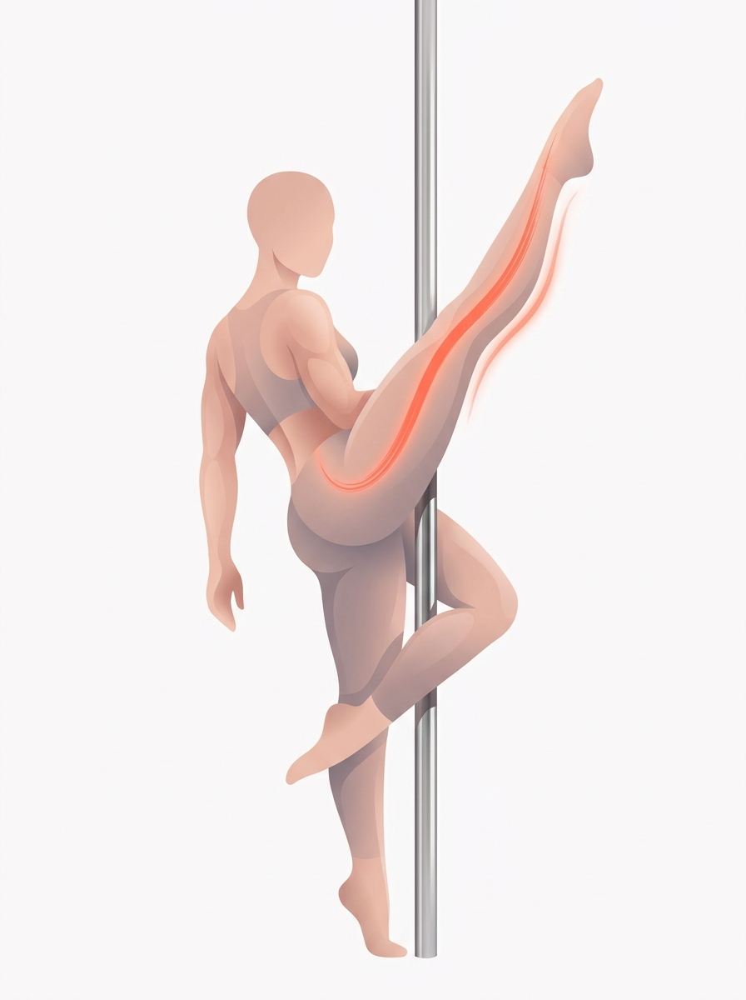
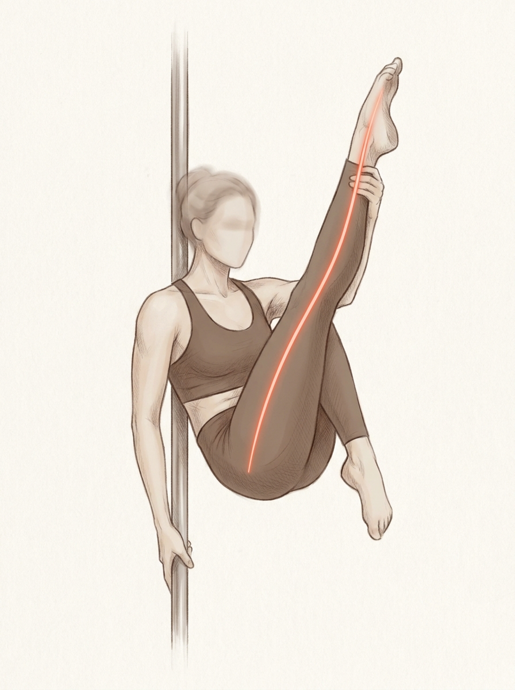
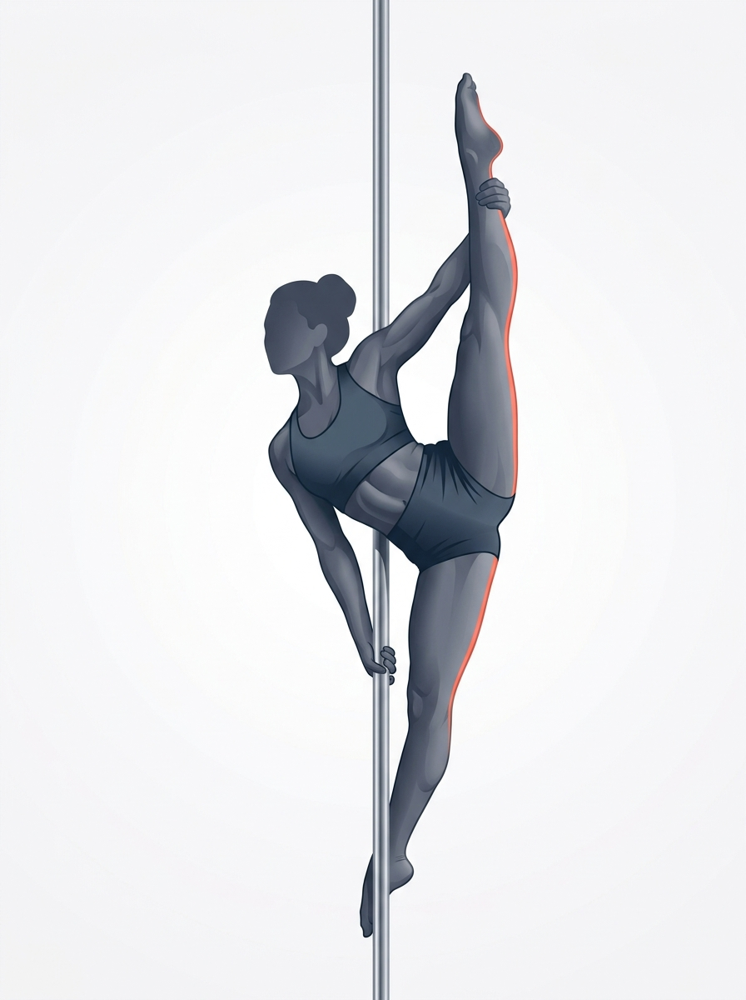

belle 검수용. 기준선 = "형태감 있는 고품질 인체 일러스트" (캐릭터화 X, 졸라맨 X). 이 바를 넘으면 도입, 미달이면 시각 표현 없이 실프레임 + 텍스트로 정직 폴백. 상황 = 무릎 접기 → 다리 신전(leg_extension) 외부 큐. 코럴(#FF4B33) 강조선 = 큐 방향("발끝으로 천장을 길게"). 익명(무얼굴)으로 특정인(정은지 포함) 닮음 회피됨.



belle 결정: ① 도입 / 폴백 ② 도입이면 어느 스타일(1안 pro벡터 / 2안 pro준실사 / 3안 flash실루엣)